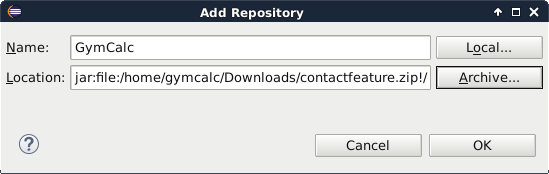

- Installieren von Eclipse
- Installieren von GymCalc
- Optional falls Vorlagen geändert werden sollen ist LibreOffice oder ein anderes Office-Paket welches *.odt Dateien editieren kann notwendig. Install LibreOffice
Procedure 1. Installieren von Eclipse
Eclipse ist ein mächtiges Programmpaket auf dessen Basis GymCalc entwickelt wurde. Eclipse ist Vorraussetzung um GymCalc zu benutzen
-
Download von Eclipse von der offiziellen Homepage.
Das Eclipse-Paket muss dem eingesetzten Betriebssystem entsprechen, also z.B. Windows 64Bit für neuere Windows Rechner. Es ist sinnvoll ein kleines Eclipse-Paket zu laden. "Eclipse IDE for Java Developers" ist ein Standard-Paket und mit 158MB relativ klein. Es ist aber nicht schlimm, wenn ein anderes Paket gewählt wird.
-
Entpacken der Datei z.B. nach c:\eclipse.
-
Unter Windows7 geschiet dies mit . →
-
.
-
Zum Verzeichnis ComputerC: navigieren.
-
In dieses Verzeichnis das zuvor kopierte "eclipse" einfügen. auf eine freie Fläche im Verzeichnis ComputerC:.
-
-
Starten von Eclipse. auf eclipse im Verzeichnis Computer C:\eclipse.
-
Klicke im Select Workspace-Dialog um das Defaultverzeichis für den Arbeitsplatz zu verwenden.

In diesem Verzeichnis werden Arbeitsplatz-spezifische Daten wie Projekte, Fensteranordnung, Dialogeinstellungen usw. gespeichert.
-
Klicke Workspace im nun einmalig erscheinenden initialen Fenster um zur eigentlichen Arbeitsfläche zu kommen.
Procedure 2. Installieren von GymCalc
Vorraussetzung für das Installieren von GymCalc ist, dass Eclipse bereits installiert ist und gestartet wurde. Siehe hierzu Installieren von Eclipse
-
Wähle → →
-
Im aufgehenden Dialog Install drücke .
-
-
Wähle als Name GymCalc.
-
Drücke auf .
-
Browse die Datei contactfeature.zip ein und Schließe den Dateiauswahl-Dialog mit
-
Schließe den Add Repository-Dialog ebenfalls mit OK.

-
-
Schalte die Checkbox Group Items by Category aus.
-
Wähle Managing Contacts an und wähle .
-
Nun werden zusätzliche Eclipse-Pakete ermittelt, die noch installiert werden müssen. Dazu ist eine Internet-Verbindung nötig. Dieses Prüfen der Abhängigkeiten kann einen Moment (ca. 2min) dauern. Wurden die Abhängigkeiten erfolgreich geprüft muss man die zu installierenden Pakete nochmals mittels bestätigen.
-
Schlussendlich müssen die Lizenzbestimmungen akzeptiert werden. Für GymCalc bedeutet dass, das es jeder installieren und benutzen kann, jedoch sämtliche Haftung ausgeschlossen ist. Dafür wähle I accept the terms of the license agreement. Dies ist mit zu bestätigen.
-
Nun läuft die eigentliche Installation, alle notwendigen zusätzlichen Eclipse-Pakete werden aus dem Internet nachgeladen und ebenfalls installiert.
-
Es erscheint noch ein Sicherheitsdialog, der besagt, dass unsignierte Programme installiert werden. Für GymCalc hat das seine Richtigkeit, da ein Signieren nicht unerhebliche Kosten produzieren würde. Somit ist der Security Warning-Dialog mit zu bestätigen.
-
Weiterhin muss den Zertifikaten vertraut werden, mit denen notwendige zusätzliche Eclipse-Pakete signiert sind. Wähle und bestätige mit .
-
Abschließend muss Eclipse neu gestartet werden. Drücke im abschließenden Dialog.